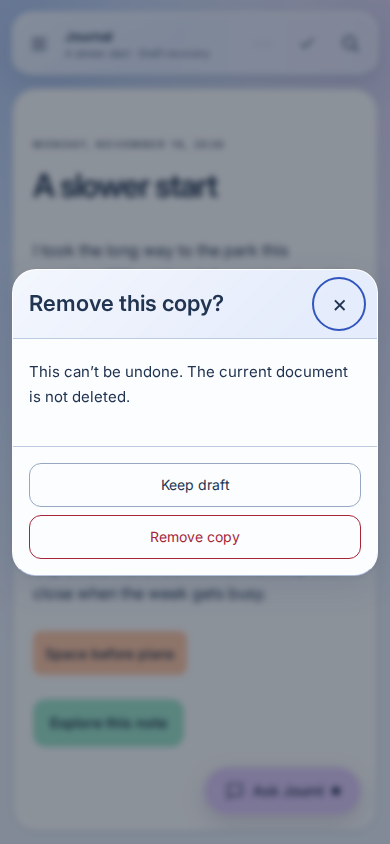
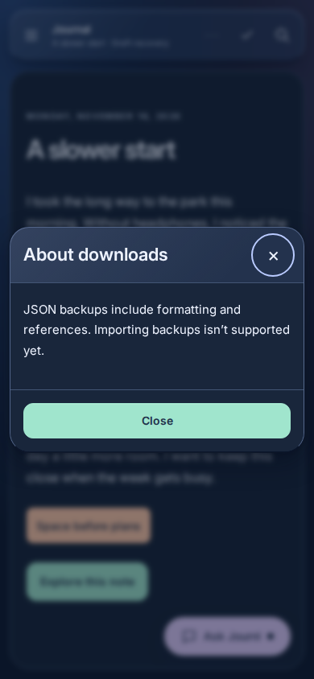
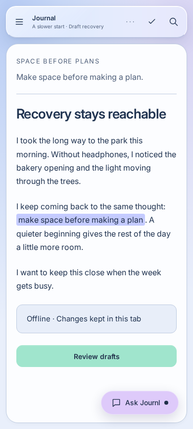
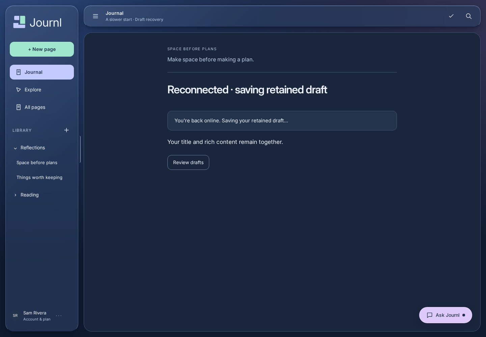
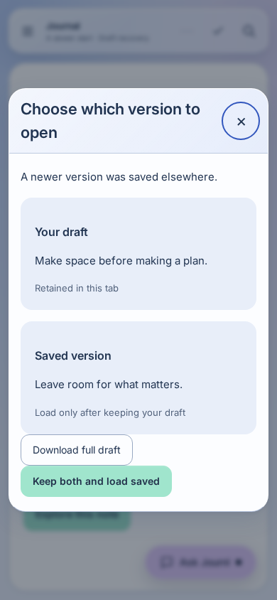
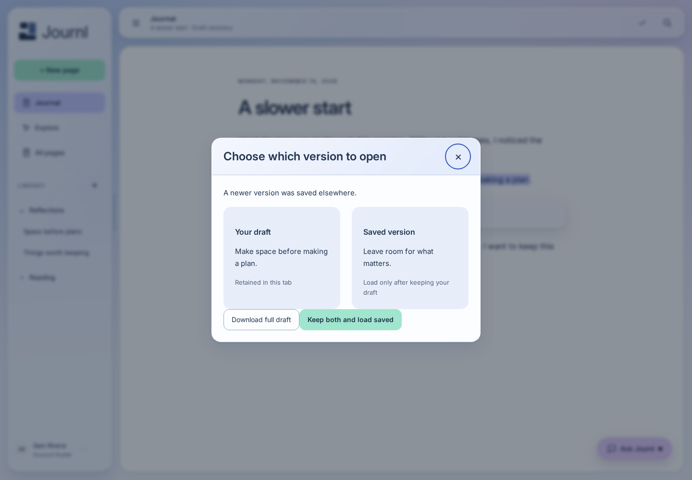
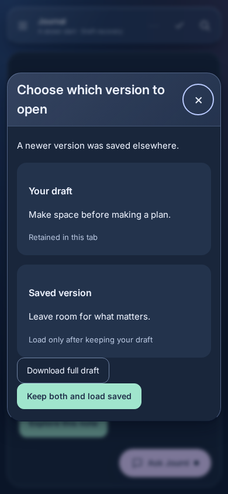
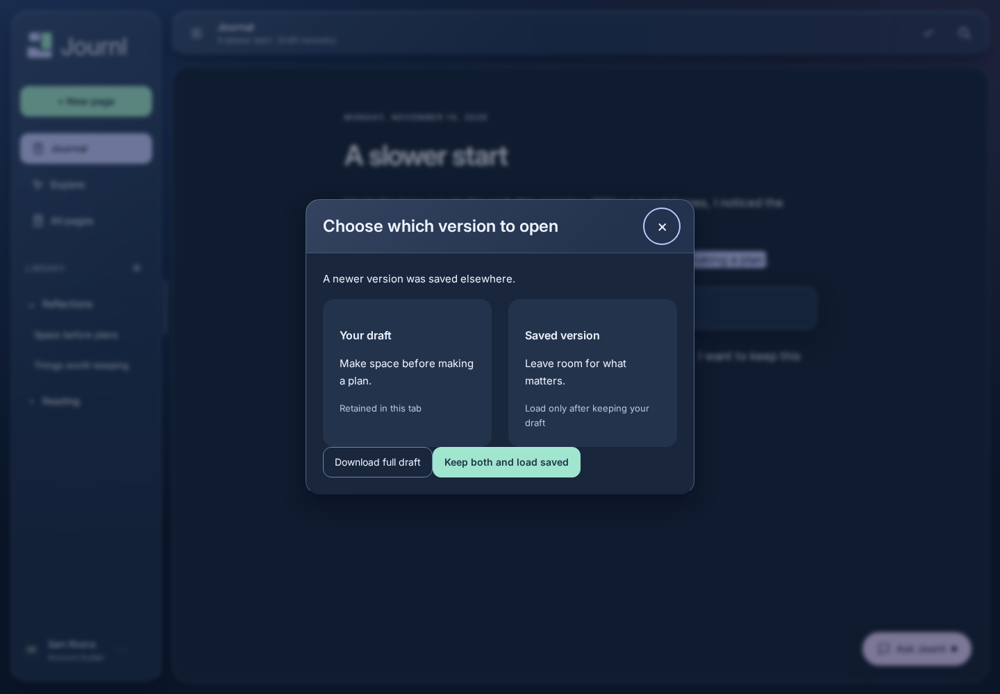

Recovery
Approved application · approved logoEvery image below is an actual canonical PNG. Open an image for its full resolution. These are authored design scenes, not current-app browser captures.
Remove this copy?
kept-remove-confirmActions and implementation pointers
× · Keep draft · Remove copy
apps/web/src/components/editor/save-status.tsxapps/web/src/components/editor/draft-recovery-actions.tsxapps/web/src/components/editor/document-draft.ts

SHA256 082ada1addea70cb07400d7ab3d75ae003646c64c0c2c8b66a9fc62d11fc4245


SHA256 c135a65c1d3bba66750a691719b3f7f69b8022d2081be631af47fabe7eb1add2

SHA256 b1bc4eb6245339a383ce219e82b8543d23512420a9a3a8c129dc999c7667e8d9

SHA256 2f1e01326f5edb987a5d5e2ebc5d76075fde0ff6a113eba77e07d6801d4c1f55
About downloads
about-downloadsActions and implementation pointers
× · Close
apps/web/src/components/editor/save-status.tsxapps/web/src/components/editor/draft-recovery-actions.tsxapps/web/src/components/editor/document-draft.ts

SHA256 bdfb710ebcb6f2a6a9fdfbcb3978a2c04b10658935e7eba141d14526d21ef5d5

SHA256 06cac39fe79bcae2ea313d7f0df34df4aa7f4a9d1613b2ef446f4517845106c2

SHA256 1d3be582f48da3c39fb05b1471afababb8fdc644df800fef923c0e3cea549626


SHA256 4b617070d2517d2ba738c9252c5059e8c1fd41ffb7998539b06a2e840f5d5ee6
Recovery stays reachable
persistent-noticeActions and implementation pointers
+ New page · Journal · Explore · All pages · ⌄ · Reflections · › · Reading · Review drafts · Ask Journl · Today’s Journal · Close · Instant · Thinking
apps/web/src/components/editor/save-status.tsxapps/web/src/components/editor/draft-recovery-actions.tsxapps/web/src/components/editor/document-draft.ts

SHA256 9a06bf48b500f3ca2e6de35590dec3439a5bb6cda42f64e5084d8b601e8e761a

SHA256 2993c088091510d4eb492ec027d1b9cb2f224415d87d3ffd54c2046114f6484f


SHA256 9a85ad2006258acd20edd3e826a374742179ce5a658c8004264bedea7e9b33d2

SHA256 0a92ed1e7306c5577a69b1aa25355e74a17f44a8f7f20f4510e866f4127d0e77
Reconnected · saving retained draft
reconnect-retryActions and implementation pointers
+ New page · Journal · Explore · All pages · ⌄ · Reflections · › · Reading · Review drafts · Ask Journl · Today’s Journal · Close · Instant · Thinking
apps/web/src/components/editor/document-draft.tsapps/web/src/components/editor/draft-activity-provider.tsx

SHA256 e6c73168376dc3908e58c9b685fbc6c2c33bac369eaf7bc497c7289ceb64bcac


SHA256 30608e074fa2c2f6c1d42cac489a4f6ca7aa5286e78831a62e273903be0431ac

SHA256 4b8b8a1fd99c6e229f81637f6e5a15ff35d76fef816bacfb289825df0f6f798a

SHA256 946a992aed4d523cb5785d802d86baae90fa89d04d4f61df8256a62c638cdd90
Choose which version to open
conflict-explicit-choiceActions and implementation pointers
× · Download full draft · Keep both and load saved
apps/web/src/components/editor/draft-recovery-actions.tsx


SHA256 02ff9a5b154b118a6504d7e81ff26778530afdc435e0abb9e5c982fb5a55948b


SHA256 43c4dadda35aef5e7bb2b94e5fb31835e6fc14630530743e643ddb4d111c10e9


SHA256 d5c9b0f1995c97b4babbc5b71914ee84232e8f4c53548fec5cbef17429ffc9f4


SHA256 d2dd8c9331b6bfea6bca8963a1feb34227bbab9ac3e8da0393c4c7821ecca56a